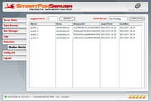
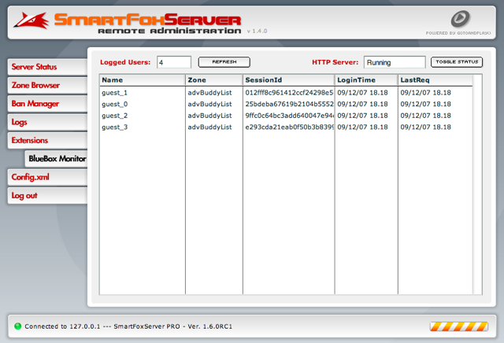

9.1 BlueBox overview
SmartFoxServer 1.6 introduces the BlueBox, a new add-on module designed to allow connections behind firewall and proxies. When the add-on is active the Flash client is transparently redirected to the BlueBox, if a direct socket connection is not available.
The BlueBox enables players under restricted network configurations to play and enjoy fast multiplayer apps and games with little to no noticeable performance loss. All existing SmartFoxServer applications can take advantage of the BlueBox without any code change!
Just recompile your SWF files with the latest client API and you're up and running.
Behind the scenes the BlueBox will wrap the SmartFoxServer protocol in HTTP packets, similarly to what is done with a so-called http-tunnel. The behavior of the BlueBox is however pretty different from regular polling solutions. The major disadvantages of this approach is the continuous traffic of requests coming from the clients, even during inactivity. Additionally the overall performance isn't very good especially if the polling interval is bigger than a couple of seconds.
The BlueBox uses a different approach eliminating the need for continuous polling. Additionally the client API provide the developer with the ability to fine tune the server response times, allowing near real-time performance!
» What's new in the API
In order to test your existing SmartFoxServer applications with BlueBox support, you simply have to recompile them with the new API provided in the package. The API will attempt a socket connection first and, on failure, they will switch to the http connection.
New properties and methods are available to the SmartFoxClient object:
» Running the BlueBox
The BlueBox is tightly integrated with SmartFoxServer and requires almost no setup or configuration.
It is shipped together with the server and it only requires that the internal webserver is running.
In order to control the web server activity you can use the SmartFoxServer AdminTool under the BlueBox Monitor.
Additionally you can turn it on or off by default from the main config.xml file.

| doc index |